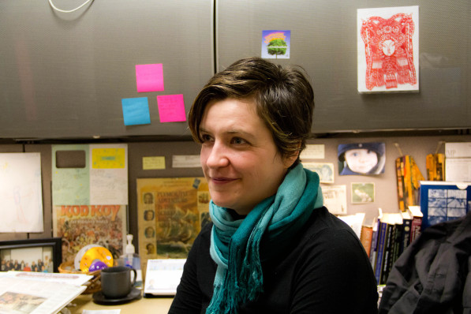

Course Description
Media Writing 2024 is a written intensive course which addresses the fundamentals of writing for various types of media. In addition to writing with clarity and accuracy, students will hone their skills in conceiving story ideas and gathering and organizing information while working under deadline pressure. Attention to detail, ethical conduct in and outside class and self-motivation are extremely important in this course. Throughout the semesters, assignments will reflect various approaches to writing and correct usage of the English language, which includes spelling, grammar, style consistency and accuracy.
Teacher's Biography: Natalia Mielczarek
Natalia Mielczarek is an assistant professor in the Communications Department at Virginia Tech. Mielczarek has a Ph.D. from the University of Iowa and a B.A. from Vanderbilt University. Her professional activites include Association for Education in Journalism and Mass Communication and the International Communication Association. She specializes in visual communication, digital participatory culture & viral content, and journalistic writing.
Mielczarek is an extremely ambitious and passionate professor. She loves what she does and enjoys sharing her knowledge with others. She grew up in Poland and in her free time loves to design spaces and write. Mielczarek's dream job has always been to be a writer or journalist of her own free will. She published her first book at age 6 and worked as a newspaper reporter for 15 years.
My Opinion and Experience
Through this class I have learned how to properly write in journlaistic style. Mielczarek is a talented writer and teacher. I now know how to write a news story, feature story as well as a formal rpess release. I know how to edit my papers in compliance with the modern AP style of writing. I've gained a variety of new skills in Media Writing 2024. This class has pushed me past my limits and taught me so much about the journalistic world that includes newspaper as well as media. I am doing fairly well in this course and am on track to earn an A in this class. Mielczarek is extremely attentive to the students and takes her work seriously as a professor of this course.
